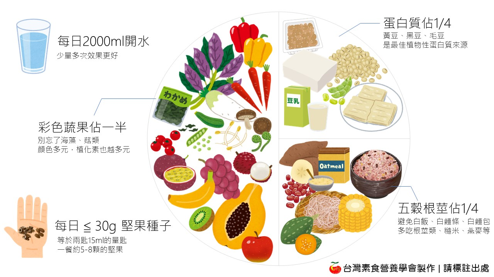

💦【豆類知多少】
豆類含有嘌呤，痛風或高尿酸血症就不能吃嗎？從目前研究證據來看，真正需要關注的，可能不是「豆類能不能吃」，而是嘌呤的來源與整體飲食型態。

圖片來源：台灣素食營養學會 ↗
💡 豆類被視為痛風的保護因子
目前證據不支持豆類會增加痛風風險，包含黃豆與非黃豆類豆類，均未與痛風發生率增加有關。多項大型前瞻性研究與統合分析一致顯示：豆類攝取與痛風風險無關，甚至可能降低血清尿酸或痛風風險。[1][2][3][4][5]
新加坡華人隊列研究（Singapore Chinese Health Study）發現：黃豆食品與非黃豆豆類攝取愈多，痛風風險愈低；相比之下，動物性蛋白（如家禽、魚類）與痛風風險增加相關。[2]
PREDIMED-Plus 研究顯示：非黃豆豆類（扁豆、豌豆、乾豆等）與較低血清尿酸及較少高尿酸血症呈現顯著反向關聯，尤其是在代謝症候群的老年人中。[4]
痛風風險真正較強的飲食因子為：紅肉、海鮮、酒精（尤其啤酒）、含糖飲料；而健康植物性飲食、低脂乳製品與咖啡則與較低痛風風險有關。[1][3][5][6][7]
豆類雖含中等量嘌呤，但其代謝與吸收特性不同於動物性嘌呤，因此不會造成明顯升高尿酸或增加痛風風險。[1][2][4][5][8]
目前沒有任何臨床指南建議限制豆類來預防或治療痛風，豆類可安心攝取。[1][2][4][5]
✅想知道更多：
💡豆類嘌呤不會像紅肉或海鮮那樣增加痛風風險，有助於增加尿酸排泄、改善胰島素阻抗
豆類的嘌呤含量明顯較低，通常約 9–72 mg/100 g，而紅肉與海鮮的嘌呤含量常 超過 100 mg/100 g。[9][10]
動物性食品的嘌呤組成以高次黃嘌呤（hypoxanthine）較多，此類嘌呤 更容易轉化為尿酸，因此對痛風風險影響較大。[9][10]
植物嘌呤的吸收率與代謝特性不同，其 生物可利用性較低、轉化成尿酸的效率較差，因此不會像動物來源那樣明顯提高尿酸。[10][11]
大型前瞻性研究與族群研究一致指出：紅肉與海鮮攝取越多，痛風風險越高；而豆類與嘌呤含量較高的蔬菜，並未與痛風風險增加相關。[1][11]
豆類富含膳食纖維、維生素 C、植化素等成分，有助於增加尿酸排泄、改善胰島素阻抗，可能進一步降低痛風風險。[1][12]
綜合而言：豆類嘌呤含量較低、植物嘌呤代謝率較低、以及營養組成有保護作用，因此豆類不會像紅肉與海鮮那樣提升痛風風險。[9][10][11]
什麼是豆類？[13]
豆類豆魚蛋肉類中的「豆」類，指的是提供豐富植物性蛋白質的黃豆及黃豆製品，如豆腐、豆乾、豆皮、素肉等。為素食者主要的飲食蛋白質來源。黃豆蛋白質雖然甲硫胺酸 ( 人體的必需胺基酸之一 )含量稍低，但同時與其他植物性食物混食，例如豆類和穀類、豆類和堅果種子類等一起搭配食用，就可以達到互補的效果，滿足蛋白質營養需求。非素食者藉豆類食物得到飲食蛋白質，可避免吃太多肉類而同時吃入過多脂肪，尤其是飽和脂肪，減少身體的負擔。
豆魚蛋肉類1份(重量為可食部分生重) [14]
= 黃豆(20公克) 或 毛豆(50公克) 或 黑豆(25公克)
= 無糖豆漿1杯(190 毫升)
= 傳統豆腐3格(80公克) 或 嫩豆腐半盒(140公克) 或小方豆干1又1/4片(40公克)
= 每份含蛋白質7公克，脂肪3公克以下，熱量55大卡
References
- Adherence to Healthy and Unhealthy Plant-Based Diets and the Risk of Gout. Rai SK, Wang S, Hu Y, et al. JAMA Network Open. 2024;7(5):e2411707. doi:10.1001/jamanetworkopen.2024.11707.
- Food Sources of Protein and Risk of Incident Gout in the Singapore Chinese Health Study. Teng GG, Pan A, Yuan JM, Koh WP. Arthritis & Rheumatology (Hoboken, N.J.). 2015;67(7):1933-42. doi:10.1002/art.39115.
- Effects of Dietary Factors on Hyperuricaemia and Gout: A Systematic Review and Meta-Analysis of Observational Studies. Chi X, Cen Y, Yang B, et al. International Journal of Food Sciences and Nutrition. 2024;75(8):753-773. doi:10.1080/09637486.2024.2400489.
- Cross-Sectional Association Between Non-Soy Legume Consumption, Serum Uric Acid and Hyperuricemia: The PREDIMED-Plus Study. Becerra-Tomás N, Mena-Sánchez G, Díaz-López A, et al. European Journal of Nutrition. 2020;59(5):2195-2206. doi:10.1007/s00394-019-02070-w.
- Global, Regional, and National Burden of Gout, 1990-2020, and Projections to 2050: A Systematic Analysis of the Global Burden of Disease Study 2021. GBD 2021 Gout Collaborators. The Lancet. Rheumatology. 2024;6(8):e507-e517. doi:10.1016/S2665-9913(24)00117-6.
- Gout. Dalbeth N, Gosling AL, Gaffo A, Abhishek A. Lancet (London, England). 2021;397(10287):1843-1855. doi:10.1016/S0140-6736(21)00569-9.
- Gout. Mikuls TR. The New England Journal of Medicine. 2022;387(20):1877-1887. doi:10.1056/NEJMcp2203385.
- Purine-Rich Foods Intake and Recurrent Gout Attacks. Zhang Y, Chen C, Choi H, et al. Annals of the Rheumatic Diseases. 2012;71(9):1448-53. doi:10.1136/annrheumdis-2011-201215.
- Determination of Purine Contents in Commonly Consumed U.S. Foods: Updating the USDA and ODS-NIH Purine Database. Wu X, Heydorn KC, Kamat M, et al. The Journal of Nutrition. 2025;:S0022-3166(25)00683-2. doi:10.1016/j.tjnut.2025.10.035.
- Total Purine and Purine Base Content of Common Foodstuffs for Facilitating Nutritional Therapy for Gout and Hyperuricemia. Kaneko K, Aoyagi Y, Fukuuchi T, Inazawa K, Yamaoka N. Biological & Pharmaceutical Bulletin. 2014;37(5):709-21. doi:10.1248/bpb.b13-00967.
- Purine-Rich Foods, Dairy and Protein Intake, and the Risk of Gout in Men. Choi HK, Atkinson K, Karlson EW, Willett W, Curhan G. The New England Journal of Medicine. 2004;350(11):1093-103. doi:10.1056/NEJMoa035700.
- Uric Acid and Plant-Based Nutrition. Jakše B, Jakše B, Pajek M, Pajek J. Nutrients. 2019;11(8):E1736. doi:10.3390/nu11081736.
- 每日飲食指南手冊 衛生福利部國民健康署 ↗
- 衛生福利部公布的食物代換表2019年5月版 衛生福利部國民健康署 ↗